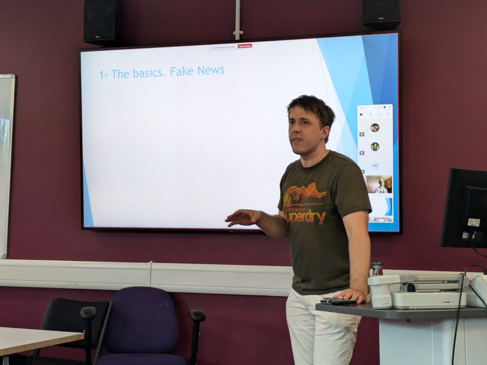
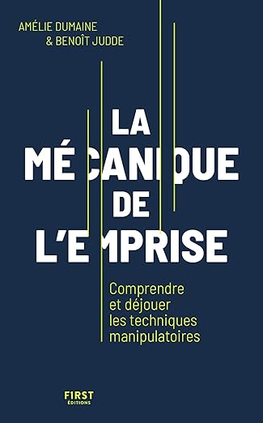

Chercheur
Psychologie · Brunel University London
Doctorant en psychologie : théories du complot et stratégie politique.
- 2021Master de psychologie.
- 2023-2027Doctorat : les liens entre théories du complot et stratégie politique.
- Février 2026Postface universitaire de La mécanique de l'emprise (First) : emprise, désinformation et complotisme.

- Juillet 2026Deux articles dans Science et pseudo-sciences n° 357, dont un sur le Fakemètre.